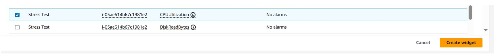

Shahzad Aslam GitHub: saslam-stack (github.com)
AWS Certified Solution Architect Associate Email: saslam79@hotmail.co.uk AWS Certified Cloud Practitioner linkedin.com/in/shahzad-aslam-556719190 HTML, CSS and JavaScript web development
Monitor an AWS EC2 Instance
Logging and monitoring are techniques implemented to achieve a common
goal. They work together to help ensure that a system's performance
baselines and security guidelines are always met.
Logging refers to recording and storing data events as log files. Logs
contain low-level details that can give you visibility into how your
application or system performs under certain circumstances. From a
security standpoint, logging helps security administrators identify red
flags that are easily overlooked in their system.
Monitoring is the process of analyzing and collecting data to help ensure
optimal performance. Monitoring helps detect unauthorized access and helps
align your services' usage with organizational security.
You can create an Amazon CloudWatch alarm that initiates when the Amazon
Elastic Compute Cloud (Amazon EC2) instance exceeds a specific central
processing unit (CPU) utilization threshold. You create a subscription
using Amazon Simple Notification Service (Amazon SNS) that sends an email
to you if this alarm is goes off. You log in to the EC2 instance and run a
stress test command that causes the CPU utilization of the EC2 instance to
reach 100 percent. This test simulates a malicious actor gaining control
of the EC2 instance and spiking the CPU. CPU spiking has various possible
causes, one of which is malware.
I have already created a preconfigured EC2 instance named Stress Test with
an attached AWS IAM role that I will use to connect via AWS Systems
Manager session manager.
Step 1: Configure Amazon SNS
You can create an SNS topic and then subscribe to it with an email
address.
Amazon SNS is a fully managed messaging service for both application-to
application (A2A) and application-to-person (A2P) communication.
In the AWS Management Console, enter SNS in the search bar, and then
choose Simple Notification Service.
On the left, choose the button, choose Topics, and then choose
Create topic. On the Create topic page in the Details section,
configure the following options:
Type: Choose Standard. In Name: Enter MyCwAlarm, Choose Create topic. On
the MyCwAlarm details page, choose the Subscriptions tab, and then choose
Create subscription.
On the Create subscription page in the Details section, configure
the following options: Topic ARN: Leave the default option selected.
Protocol: From the dropdown list, choose Email. Endpoint:Enter a
valid email address that you can access. Choose Create subscription.
In the Details section, the Status should be Pending confirmation.
You should have received an AWS Notification - Subscription Confirmation
email message at the email address that you provided in the previous step.
Open the email that you received with the Amazon SNS subscription
notification, and choose Confirm subscription.
Go back to the AWS Management Console. In the left navigation pane, choose
Subscriptions. The Status should now be Confirmed.
Step 2: Create a CloudWatch alarm
In the AWS Management Console, enter Cloudwatch in the search bar, and
then choose it.
In the left navigation pane, choose the Metrics dropdown list, and then
choose All metrics. CloudWatch usually takes 5-10 minutes after the
creation of an EC2 instance to start fetching metric details. On the
Metrics page, choose EC2, and choose Per-Instance Metrics. From this page,
you can view all the metrics being logged and the specific EC2 instance
for the metrics. Select the check box with CPUUtilization as the Metric
name for the Stress Test EC2 instance. The following image shows the
metrics and instance that you should select. This option displays the
graph for the CPU utilization metric, which should be approximately 0
because nothing has been done yet.
In the left navigation pane, choose the Alarmsdropdown list, and then
choose All alarms. You now create a metric alarm. A metric alarm watches a
single CloudWatch metric or the result of a math expression based on
CloudWatch metrics. The alarm performs one or more actions based on the
value of the metric or expression relative to a threshold over a number of
time periods. The action then sends a notification to the SNS topic that
you created earlier.
Choose Create alarm. Choose Select metric, choose EC2, and then choose
Per-Instance Metrics. Select the check box with CPUUtilization as the
Metric name for the Stress Test instance name.
Choose Select metric. On the Specify metric and conditions page, configure
the following options:
Metric: Metric name: Enter CPUUtilization, InstanceId: Leave the default
option selected. Statistic: Enter Average , Period: From the dropdown
list, choose 1 minute.
Conditions: Threshold type: Choose Static. Whenever CPUUtilization is...:
Choose Greater > threshold. than... Define the threshold value: Enter 60
Choose Next. On the Configure actions page, configure the following options:
Notification: Alarm state trigger: Choose In alarm. Select an SNS topic:
Choose Select an existing SNS topic. Send a notification to...: Choose the
text box, and then choose MyCwAlarm.
Choose Next, and then configure the following options:
Name and description: Alarm name: Enter CPUUtilizationAlarm . Alarm
description - optional: Enter CloudWatch alarm for Stress Test EC2
instance CPUUtilization . Choose Next
Review the Preview and create page, and then choose Create alarm.
Step 3: Test the Cloudwatch alarm
You can log in to the Stress Test EC2 instance and run a command that
stresses the CPU load to 100 percent. This increase in CPU utilization
activates the CloudWatch alarm, which causes Amazon SNS to send an email
notification to the email address associated with the SNS topic.
Navigate to the AWS console EC2 Dashboard, choose running instance and
click on connect.
Choose to connect session manager (See AWS documentation for the session
manager agent installation instructions).
To manually increase the CPU load of the EC2 instance, run the following
command: sudo stress --cpu 10 -v --timeout 400s . The output from the
command should look similar to the following image.
This command runs for 400 seconds, loads the CPU to 100 percent, and then
decreases the CPU to 0 percent after the allotted time. It takes a few
minutes for the alarm status to change to In alarm and for an email to
send. On the graph, you can see where CPUUtilization has increased above
the 60 percent threshold. Navigate to your email inbox for the email
address that you used to configure the Amazon SNS subscription. You should
see a new email notification from AWS Notifications.
Step 4: Create a CloudWatch dashboard
CloudWatch dashboards are customizable home pages in the CloudWatch
console that you can use to monitor your resources in a single view. With
CloudWatch dashboards, you can even monitor resources that are spread
across different Regions. You can use CloudWatch dashboards to create
customized views of the metrics and alarms for your AWS resources.
Go to the CloudWatch section in the AWS console. In the left navigation
pane, choose Dashboards.
Choose Create dashboard.
For Dashboard name, enter MyEC2Dashboard and then choose Create dashboard.
Choose Metrics. Choose Line.
Choose EC2, and then choose Per-Instance Metrics.
Select the check box with Stress Test for the Instance name and
CPUUtilization for the Metric name: Choose Create widget. Choose Save
dashboard.
Now you have created a quick access shortcut to view the CPUUtilization
metric for the Stress Test instance.

Choose Create widget. Choose Save dashboard.
Now you have created a quick access shortcut to view the CPUUtilization
metric for the Stress Test instance.